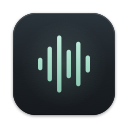
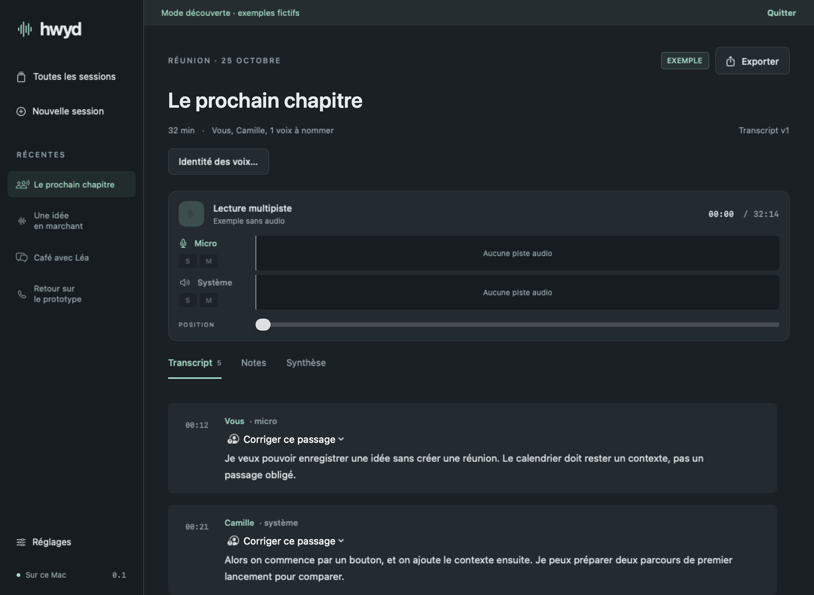
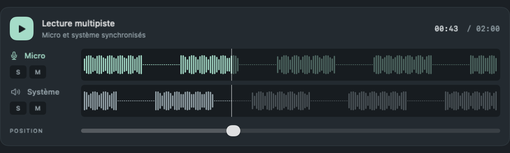
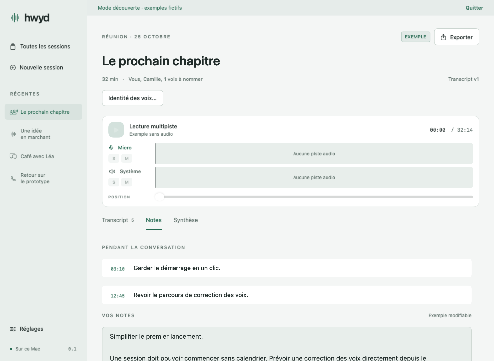

One click. Two tracks.
Capture your microphone and your Mac’s audio together. A call, a room conversation or a voice memo: a calendar event is optional.

hwyd.The meeting. The quick call. That idea on the way home.
How Was Your Day gives them a place to stay.
Apple Silicon · macOS 26+ · Experimental release

LESS SCRAMBLING. MORE LISTENING.
Capture your microphone and your Mac’s audio together. A call, a room conversation or a voice memo: a calendar event is optional.
Read the local transcript, correct a speaker and jump back to the audio. Solo or mute either track while you listen.
Keep your own notes, or ask a local model for a structured draft: overview, decisions, next steps and details by topic.
HEAR THE WHOLE PICTURE
Your voice and the audio from other apps stay on separate, synchronized tracks. Real waveforms help you find your place. Solo and mute let you choose what to hear.
Raw audio is preserved. Automatic echo rejection is not available yet.


YOUR NOTES COME FIRST
Write during the conversation in a floating notepad. Come back later to your notes, the transcript and the original audio, all in the same session.
Optional summaries run through a local server such as LM Studio. Source timestamps help you check what was actually said.
BUILT TO STAY CLOSE
Apple Speech and optional offline diarization process the audio on your Mac. Summaries use a local model server you configure separately.
Start explicitly, with a visible recording state. Calendar reminders can offer “join and record”. Voice enrollment requires separate consent.
Export versioned Markdown and JSON, or let your agents read sessions through the standalone MCP server. Voice vectors never enter exports.
HOW WAS YOUR DAY?
Available for Apple Silicon Macs running macOS 26 or later.
brew install --cask alepee/tap/how-was-your-dayThe app is signed but not notarized by Apple. If macOS blocks the first launch, open System Settings → Privacy & Security → Open Anyway.
Transcription is currently French-only. Speaker identification and summaries still need review. Automatic audio cleanup, app-level encryption and embedded LLM inference are not implemented. Inform participants before recording. Read the current limitations ↗